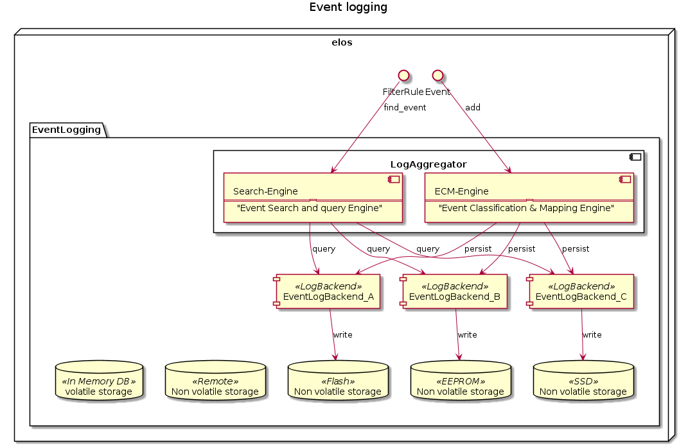

Architecture Design Record - Event Storage¶
Problem¶
The elos shall archive and store events based on a configurable rule set to provide later retrieval of events or to browse and search for specific events matching a certain pattern.
The difference between events provided by the event logging versus the event processing subsystem, is that the event logging system can be searched without a subscription and therefore enables a client to retrieve historical events he never subscribed for.
We can make a categorization of events in
Historical events
Real time(*) events .
(* real time in the meaning of the selected subscription and event retrieval strategy of the elos client)
All events published via elos are passed to the event logging subsystem where the events shall be prepared for later retrieval. Due to the possible amount of events that can occur and the limits , the following problems come up:
Requirements on the event logging subsystem:
Healthiness or harmfulness for the hardware (flash wear by log storage)
Flexible to available space (store all relevant events)
Reliability that an event is stored
Reliability that an event is read as stored (protection from modification (Integrity))
Speed - persisting
Speed - reading / searching
reliability of storage (protection from loosing of relevant events (Availability))
protection of access to events (Confidentiality)
The security targets Confidentiality, Integrity and Availability (CIA) are addressed here.
Influencing factors¶
The following constraints have to be taken into account for a suitable solution:
Live time of Flash storage, less writes of blocks as possible
Save against power loss – ensure atomic writes of events, do not corrupt event storage due to incomplete writes
Different sizes of available storage
Different types of storage
Assumptions¶
The following assumptions have been made in the decision process:
Flash devices or similar (e.g. EEPROM) are used for storage
Available storage capacity for event storage is somewhere between a few 100 Bytes (e.g. EEPROM) and several GBs.
The storage time of events ranges from 0 (not stored at all) up to theoretically unlimited (hence >15a)
Events that are older than their intended storage time shall be actively deleted to save space. (retention policy)
Considered Alternatives¶
1) Distributed event storage¶
The basic idea is to not restrict the final used storage technology for events to a single one. The canonical format of the events contains already suitable machine readable information to divide events in several storage classes like:
shall be kept as long as possible – event or payload is unique and probably indispensable
event should be kept – but it is not critical , can be dropped in favor of more important messages
event can be kept – not necessary to survive restarts no need to persist
event is discarded right away - never stored
There are even more categorizations thinkable.
The distributed event storage shall be capable of matching incoming events against configurable event storage groups and link those groups to specific storage backends. These backends can be of different types and locations. A backend shall be defined by the following attributes:
retention policy
criticality assurance (atomic writes, read reliability, …)
(may be not needed as only ‘criticality assurance’ is the important part)
storage technology (DBMS, Plain-File, RAW-Device, …. )
backing device type)
After the definition of event storage classes for historical events and the characterisation of event storage backends the remaining task for event logging system is to do the classification of an event against the given storage classes and then do the mapping to the corresponding storage backend.

To store and load events two different process are necessary.
Event Classification and Mapping Engine¶
Each event must be mapped to a event storage class, which is linked to a event storage backend. This shall be done by by a configurable rule set of RPN-Filters
Search-Engine¶
The process to load events is a kind of inverted store process. To search for events it must be predicted which storage backends shall be queried.
The implementation of both could use dynamic libraries to allow dynamic configuration and extension.
pros
not bound to a single storage technology, can provide benefits of different storage backends as needed
easy extensible if new storage technologies become available it can be combined or replaces former ones
cons
overhead due to necessary classification of incoming events
But: some kind of filtering is necessary anyway in any solution
probably a large dependency list, due to unbound possible storage technologies used
But: They shall be configurable as dynamic loadable plugins (Dynamic Shared Objects) and therefore the system integration design process is responsible to make a well balanced selection.
2) Direct event log storage¶
This solution is straight forward by selecting a single storage technology as storage backend and pass each event through to be persisted on the final backing storage. Optionally a filter mechanic can be used to reduce the amount or to decide if an event shall be stored or not.
pros
simplicity, straight forward take the event and store it without further processing
less dependencies – only one storage technology involved
cons
less flexible and hard if not impossible to find the single storage technology that serves all the requirements (except an implementation of solution one is taken as backend)
Decision¶
We choose the distributed event storage approach, number 1.
Rationale¶
The distributed approach gives us the opportunity to continuously develop and evaluate new storage backends and combine them with the current implementation. If only one back end is configured the solution 1 becomes equal to solution 2 from the behavioral point of view.